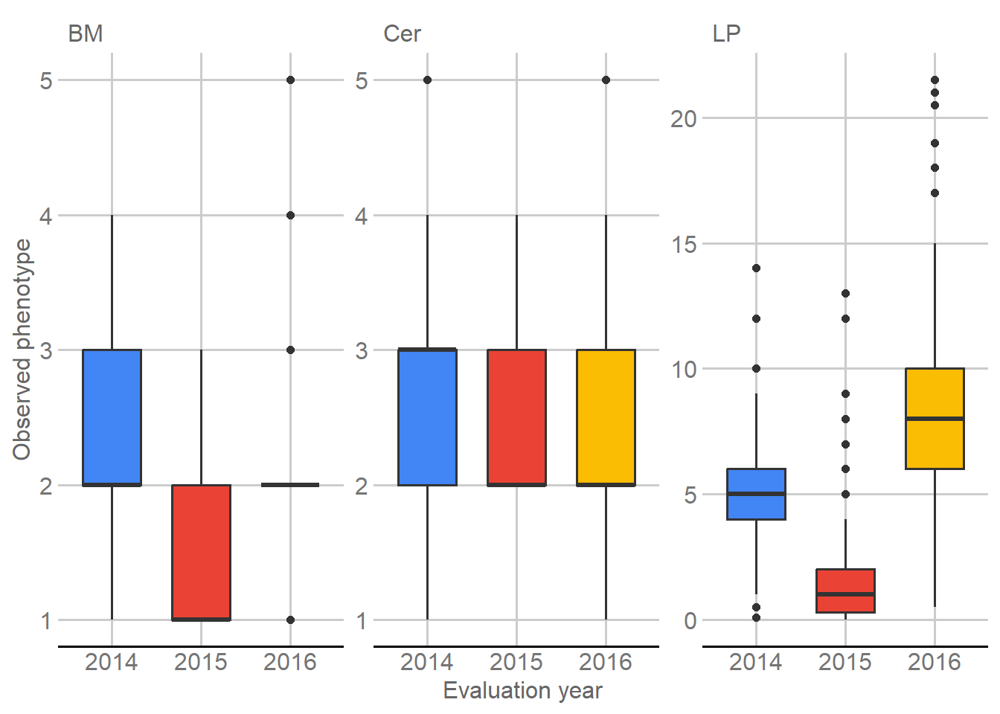
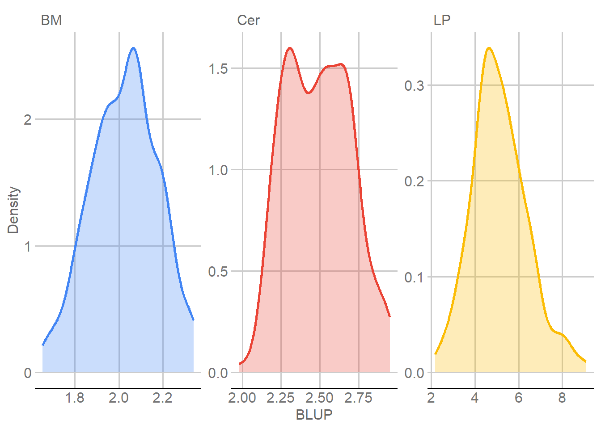

Last updated: 2026-11-12
Checks: 6 1
Knit directory:
Genomic-Prediction-using-Regularized-Artificial-Neural-Networks/
This reproducible R Markdown analysis was created with workflowr (version 1.7.2). The Checks tab describes the reproducibility checks that were applied when the results were created. The Past versions tab lists the development history.
The R Markdown is untracked by Git. To know which version of the R
Markdown file created these results, you’ll want to first commit it to
the Git repo. If you’re still working on the analysis, you can ignore
this warning. When you’re finished, you can run
wflow_publish to commit the R Markdown file and build the
HTML.
Great job! The global environment was empty. Objects defined in the global environment can affect the analysis in your R Markdown file in unknown ways. For reproduciblity it’s best to always run the code in an empty environment.
The command set.seed(20260821) was run prior to running
the code in the R Markdown file. Setting a seed ensures that any results
that rely on randomness, e.g. subsampling or permutations, are
reproducible.
Great job! Recording the operating system, R version, and package versions is critical for reproducibility.
Nice! There were no cached chunks for this analysis, so you can be confident that you successfully produced the results during this run.
Great job! Using relative paths to the files within your workflowr project makes it easier to run your code on other machines.
Great! You are using Git for version control. Tracking code development and connecting the code version to the results is critical for reproducibility.
The results in this page were generated with repository version e74cbb0. See the Past versions tab to see a history of the changes made to the R Markdown and HTML files.
Note that you need to be careful to ensure that all relevant files for
the analysis have been committed to Git prior to generating the results
(you can use wflow_publish or
wflow_git_commit). workflowr only checks the R Markdown
file, but you know if there are other scripts or data files that it
depends on. Below is the status of the Git repository when the results
were generated:
Ignored files:
Ignored: .Rhistory
Ignored: .Rproj.user/
Ignored: .github/
Ignored: .local/
Ignored: data/dados_reais/geno_real.rds
Ignored: renv/library/
Ignored: renv/staging/
Untracked files:
Untracked: analysis/real_data_phenotype.Rmd
Untracked: audit_real_data_phenotype_blups.R
Untracked: output/real/
Untracked: patch_real_data_phenotype_tutorial.py
Untracked: patch_real_data_phenotype_tutorial_v2.py
Untracked: replace_real_data_phenotype_v3.py
Unstaged changes:
Modified: data/dados_reais/coffee_longitudinal_phenotypes.txt
Note that any generated files, e.g. HTML, png, CSS, etc., are not included in this status report because it is ok for generated content to have uncommitted changes.
There are no past versions. Publish this analysis with
wflow_publish() to start tracking its development.
This module prepares the longitudinal Coffea arabica phenotypes used as responses in the real-data genomic prediction workflow. The experiment contains three annual evaluations, 13 experimental progenies, two checks, and an augmented-block structure.
The module has four goals:
No marker data are used in this module. Genomic information enters only after this phenotypic stage has been completed.
Three packages support the reader-facing analysis:
knitr formats experimental summaries
and model results as HTML tables.ggplot2 displays the annual phenotypic
distributions.ggthemes applies the same visual style
used in the simulated workflow.The mixed model is fitted directly from its mixed-model equations. This makes the variance-component estimation and stopping rule explicit in the tutorial.
library(knitr)
library(ggplot2)
library(ggthemes)The analyzed traits are Cer, BM, and
LP. Zero is treated as a non-observation during mixed-model
fitting; this affects LP only.
traits <- c("Cer", "BM", "LP")
tolerance <- c(
Cer = 0.05,
BM = 0.05,
LP = 0.0001
)
fitting_settings <- data.frame(
Trait = traits,
Tolerance = unname(tolerance[traits]),
Zero_treated_as_non_observation = TRUE,
stringsAsFactors = FALSE
)
fitting_settings |>
knitr::kable(
format = "html",
caption = "Trait-specific fitting settings",
row.names = FALSE,
table.attr = 'class="table table-striped table-hover table-bordered" style="width:100%; max-width:100%;"'
)| Trait | Tolerance | Zero_treated_as_non_observation |
|---|---|---|
| Cer | 5e-02 | TRUE |
| BM | 5e-02 | TRUE |
| LP | 1e-04 | TRUE |
The phenotype file uses descriptive names so the experimental structure can be read directly from the analysis.
phenotype <- read.delim(
PHENOTYPE_INPUT,
header = TRUE,
sep = "\t",
check.names = FALSE,
stringsAsFactors = FALSE
)
expected_columns <- c(
"Observacao", "Progenie", "Ano", "ID_Planta", "Populacao",
"Bloco", "Progenie_Ano", "Planta", "Cer", "BM", "LP"
)
stopifnot(
identical(names(phenotype), expected_columns),
nrow(phenotype) == 684L,
ncol(phenotype) == 11L,
!anyNA(phenotype)
)
variable_dictionary <- data.frame(
Variable = expected_columns,
Interpretation = c(
"Observation index",
"Progeny; 1-13 experimental and 14-15 checks",
"Evaluation year",
"Permanent individual plant identifier",
"Population",
"Block",
"Progeny-by-year identifier",
"Plant number within progeny",
"Cercosporiosis score",
"Vegetative vigor score",
"Yield-related longitudinal measurement"
),
stringsAsFactors = FALSE
)
variable_dictionary |>
knitr::kable(
format = "html",
caption = "Variables in the longitudinal phenotype file",
row.names = FALSE,
table.attr = 'class="table table-striped table-hover table-bordered" style="width:100%; max-width:100%;"'
)| Variable | Interpretation |
|---|---|
| Observacao | Observation index |
| Progenie | Progeny; 1-13 experimental and 14-15 checks |
| Ano | Evaluation year |
| ID_Planta | Permanent individual plant identifier |
| Populacao | Population |
| Bloco | Block |
| Progenie_Ano | Progeny-by-year identifier |
| Planta | Plant number within progeny |
| Cer | Cercosporiosis score |
| BM | Vegetative vigor score |
| LP | Yield-related longitudinal measurement |
The 684 records correspond to 228 permanent plant identifiers evaluated in 2014, 2015, and 2016. Progenies 1-13 form the genomic-prediction population. Progenies 14 and 15 are checks in the augmented-block experiment and remain in the phenotypic mixed-model fit.
target <- phenotype[phenotype$Progenie %in% 1:13, , drop = FALSE]
checks <- phenotype[phenotype$Progenie %in% 14:15, , drop = FALSE]
structure_summary <- data.frame(
Quantity = c(
"Longitudinal observations", "Evaluation years", "Progenies",
"Experimental progenies", "Check progenies", "Permanent plant identifiers",
"Target plants", "Check plant identifiers", "Blocks", "Populations",
"Progeny-by-year levels"
),
Value = c(
nrow(phenotype), length(unique(phenotype$Ano)),
length(unique(phenotype$Progenie)), length(unique(target$Progenie)),
length(unique(checks$Progenie)), length(unique(phenotype$ID_Planta)),
length(unique(target$ID_Planta)), length(unique(checks$ID_Planta)),
length(unique(phenotype$Bloco)), length(unique(phenotype$Populacao)),
length(unique(phenotype$Progenie_Ano))
),
stringsAsFactors = FALSE
)
structure_summary |>
knitr::kable(
format = "html",
caption = "Experimental structure of the longitudinal coffee data",
row.names = FALSE,
table.attr = 'class="table table-striped table-hover table-bordered" style="width:100%; max-width:100%;"'
)| Quantity | Value |
|---|---|
| Longitudinal observations | 684 |
| Evaluation years | 3 |
| Progenies | 15 |
| Experimental progenies | 13 |
| Check progenies | 2 |
| Permanent plant identifiers | 228 |
| Target plants | 195 |
| Check plant identifiers | 33 |
| Blocks | 7 |
| Populations | 4 |
| Progeny-by-year levels | 45 |
target_repetitions <- table(table(target$ID_Planta))
target_year_table <- table(
target$ID_Planta,
target$Ano
)
target_years <- rowSums(
target_year_table > 0
)
stopifnot(
identical(sort(unique(phenotype$Ano)), c(2014L, 2015L, 2016L)),
length(unique(phenotype$Progenie)) == 15L,
length(unique(phenotype$ID_Planta)) == 228L,
length(unique(target$ID_Planta)) == 195L,
length(unique(checks$ID_Planta)) == 33L,
length(intersect(unique(target$ID_Planta), unique(checks$ID_Planta))) == 0L,
length(target_repetitions) == 1L,
as.integer(target_repetitions) == 195L,
as.integer(names(target_repetitions)) == 3L,
all(target_years == 3L)
)For the experimental progenies,
\[ 13\ \text{progenies}\times15\ \text{plants}=195\ \text{target plants}. \]
ID_Planta therefore identifies the same individual plant
across all three evaluation years.
The raw observations are summarized before model fitting. These summaries show the original scale and annual variation; they do not replace the mixed-model adjustment.
trait_summary <- data.frame()
for (trait in traits) {
x <- phenotype[[trait]]
trait_summary <- rbind(
trait_summary,
data.frame(
Trait = trait,
N = sum(is.finite(x)),
Mean = mean(x, na.rm = TRUE),
SD = stats::sd(x, na.rm = TRUE),
Minimum = min(x, na.rm = TRUE),
Maximum = max(x, na.rm = TRUE),
Zero_count = sum(x == 0, na.rm = TRUE),
stringsAsFactors = FALSE
)
)
}
rownames(trait_summary) <- NULL
trait_summary |>
knitr::kable(
format = "html",
digits = 3,
caption = "Raw phenotypic summaries",
row.names = FALSE,
table.attr = 'class="table table-striped table-hover table-bordered" style="width:100%; max-width:100%;"'
)| Trait | N | Mean | SD | Minimum | Maximum | Zero_count |
|---|---|---|---|---|---|---|
| Cer | 684 | 2.506 | 0.717 | 1 | 5.0 | 0 |
| BM | 684 | 2.057 | 0.692 | 1 | 5.0 | 0 |
| LP | 684 | 4.997 | 3.836 | 0 | 21.5 | 7 |
year_summary <- data.frame()
for (trait in traits) {
for (year in sort(unique(phenotype$Ano))) {
x <- phenotype[
phenotype$Ano == year,
trait
]
year_summary <- rbind(
year_summary,
data.frame(
Trait = trait,
Year = year,
N = length(x),
Mean = mean(x),
SD = stats::sd(x),
Minimum = min(x),
Maximum = max(x),
stringsAsFactors = FALSE
)
)
}
}
rownames(year_summary) <- NULL
year_summary |>
knitr::kable(
format = "html",
digits = 3,
caption = "Phenotypic summaries by evaluation year",
row.names = FALSE,
table.attr = 'class="table table-striped table-hover table-bordered" style="width:100%; max-width:100%;"'
)| Trait | Year | N | Mean | SD | Minimum | Maximum |
|---|---|---|---|---|---|---|
| Cer | 2014 | 228 | 2.693 | 0.872 | 1.0 | 5.0 |
| Cer | 2015 | 228 | 2.377 | 0.554 | 2.0 | 4.0 |
| Cer | 2016 | 228 | 2.447 | 0.652 | 1.0 | 5.0 |
| BM | 2014 | 228 | 2.456 | 0.625 | 1.0 | 4.0 |
| BM | 2015 | 228 | 1.531 | 0.589 | 1.0 | 3.0 |
| BM | 2016 | 228 | 2.184 | 0.498 | 1.0 | 5.0 |
| LP | 2014 | 228 | 5.152 | 2.048 | 0.1 | 14.0 |
| LP | 2015 | 228 | 1.667 | 2.043 | 0.0 | 13.0 |
| LP | 2016 | 228 | 8.171 | 3.825 | 0.5 | 21.5 |
The observations are separated by evaluation year to show the temporal variation present before mixed-model adjustment. This view helps explain why year is represented explicitly in the model instead of averaging the annual measurements before analysis.
phenotype_long <- rbind(
data.frame(Year = phenotype$Ano, Trait = "Cer", Value = phenotype$Cer),
data.frame(Year = phenotype$Ano, Trait = "BM", Value = phenotype$BM),
data.frame(Year = phenotype$Ano, Trait = "LP", Value = phenotype$LP)
)
phenotype_long$Year <- factor(
phenotype_long$Year,
levels = c(2014, 2015, 2016)
)
p_traits <- ggplot(
phenotype_long,
aes(x = Year, y = Value, fill = Year)
) +
geom_boxplot(
width = 0.65,
show.legend = FALSE
) +
facet_wrap(
~ Trait,
scales = "free_y"
) +
scale_fill_gdocs() +
labs(
x = "Evaluation year",
y = "Observed phenotype"
) +
theme_gdocs()
print(p_traits)
Annual phenotypic distributions for the three coffee traits.
Each trait is analyzed separately with
\[ \mathbf{y} = \mathbf{X}\mathbf{u} + \mathbf{Z}\mathbf{g} + \mathbf{W}\mathbf{p} + \mathbf{V}\mathbf{r} + \mathbf{T}\mathbf{b} + \mathbf{R}\mathbf{i} + \mathbf{e}, \]
where:
The model separates permanent differences among plants from annual and experimental sources of variation.
model_terms <- data.frame(
Model_component = c(
"Fixed year", "Progeny", "Permanent individual plant", "Population",
"Block", "Progeny x year", "Residual"
),
Data_field = c(
"Ano", "Progenie", "ID_Planta", "Populacao", "Bloco", "Progenie_Ano", "-"
),
Type = c("Fixed", rep("Random", 5), "Residual"),
stringsAsFactors = FALSE
)
model_terms |>
knitr::kable(
format = "html",
caption = "Terms in the longitudinal phenotypic mixed model",
row.names = FALSE,
table.attr = 'class="table table-striped table-hover table-bordered" style="width:100%; max-width:100%;"'
)| Model_component | Data_field | Type |
|---|---|---|
| Fixed year | Ano | Fixed |
| Progeny | Progenie | Random |
| Permanent individual plant | ID_Planta | Random |
| Population | Populacao | Random |
| Block | Bloco | Random |
| Progeny x year | Progenie_Ano | Random |
| Residual |
|
Residual |
Planta is retained for identification but is not fitted
as an additional random effect because ID_Planta already
represents the permanent individual plant.
Zero is treated as a non-observation during mixed-model fitting.
Cer and BM therefore retain all 684 records,
whereas seven zero LP records are excluded.
The three analysis data sets are created explicitly so the reader can see which observations enter each model.
cer_data <- phenotype
cer_data$y <- as.numeric(cer_data$Cer)
cer_data <- cer_data[
is.finite(cer_data$y) & cer_data$y != 0,
,
drop = FALSE
]
bm_data <- phenotype
bm_data$y <- as.numeric(bm_data$BM)
bm_data <- bm_data[
is.finite(bm_data$y) & bm_data$y != 0,
,
drop = FALSE
]
lp_data <- phenotype
lp_data$y <- as.numeric(lp_data$LP)
lp_data <- lp_data[
is.finite(lp_data$y) & lp_data$y != 0,
,
drop = FALSE
]
analysis_data <- list(
Cer = cer_data,
BM = bm_data,
LP = lp_data
)
records_used <- data.frame(
Trait = c("Cer", "BM", "LP"),
Records_available = rep(nrow(phenotype), 3),
Records_used = c(
nrow(cer_data),
nrow(bm_data),
nrow(lp_data)
),
Records_excluded = c(
nrow(phenotype) - nrow(cer_data),
nrow(phenotype) - nrow(bm_data),
nrow(phenotype) - nrow(lp_data)
),
stringsAsFactors = FALSE
)
records_used |>
knitr::kable(
format = "html",
caption = "Records entering each trait-specific mixed model",
row.names = FALSE,
table.attr = 'class="table table-striped table-hover table-bordered" style="width:100%; max-width:100%;"'
)| Trait | Records_available | Records_used | Records_excluded |
|---|---|---|---|
| Cer | 684 | 684 | 0 |
| BM | 684 | 684 | 0 |
| LP | 684 | 677 | 7 |
stopifnot(
nrow(cer_data) == 684L,
nrow(bm_data) == 684L,
nrow(lp_data) == 677L
)For each trait, the fixed-effect matrix contains one indicator column for each year. Five additional incidence matrices represent progeny, permanent plant, population, block, and progeny-by-year interaction.
The matrices are created directly inside the fitting loop with
model.matrix(). The factor levels follow their first
appearance in the data so the mixed-model equations retain the same
ordering throughout the analysis.
The fitting procedure starts from variance proportions of 0.10 for each random effect and 0.50 for the residual. Thus the initial variance ratio for every random component is
\[ \lambda_j=\frac{0.50}{0.10}=5. \]
At each iteration, the mixed-model equations are solved and the residual variance is updated by
\[ \widehat{\sigma}_e^2 = \frac{ \mathbf{e}'\mathbf{e} + \sum_j \lambda_j\mathbf{u}_j'\mathbf{u}_j }{ n-\operatorname{rank}(\mathbf{X}) }, \]
while each random-effect variance is updated by
\[ \widehat{\sigma}_j^2 = \frac{ \mathbf{u}_j'\mathbf{u}_j + \widehat{\sigma}_e^2\operatorname{tr}(\mathbf{C}_{jj}) }{q_j}. \]
The loop stops when the largest absolute change among the five random variance proportions is smaller than or equal to the trait-specific tolerance.
fits <- list()
for (trait in traits) {
d <- analysis_data[[trait]]
year_levels <- unique(d$Ano)
progeny_levels <- unique(d$Progenie)
plant_levels <- unique(d$ID_Planta)
population_levels <- unique(d$Populacao)
block_levels <- unique(d$Bloco)
progeny_year_levels <- unique(d$Progenie_Ano)
X <- model.matrix(
~ 0 + factor(Ano, levels = year_levels),
data = d
)
Z_progeny <- model.matrix(
~ 0 + factor(Progenie, levels = progeny_levels),
data = d
)
Z_plant <- model.matrix(
~ 0 + factor(ID_Planta, levels = plant_levels),
data = d
)
Z_population <- model.matrix(
~ 0 + factor(Populacao, levels = population_levels),
data = d
)
Z_block <- model.matrix(
~ 0 + factor(Bloco, levels = block_levels),
data = d
)
Z_progeny_year <- model.matrix(
~ 0 + factor(Progenie_Ano, levels = progeny_year_levels),
data = d
)
W <- cbind(
X,
Z_progeny,
Z_plant,
Z_population,
Z_block,
Z_progeny_year
)
p <- ncol(X)
start_progeny <- p + 1L
end_progeny <- start_progeny + ncol(Z_progeny) - 1L
start_plant <- end_progeny + 1L
end_plant <- start_plant + ncol(Z_plant) - 1L
start_population <- end_plant + 1L
end_population <- start_population + ncol(Z_population) - 1L
start_block <- end_population + 1L
end_block <- start_block + ncol(Z_block) - 1L
start_progeny_year <- end_block + 1L
end_progeny_year <- start_progeny_year + ncol(Z_progeny_year) - 1L
idx_progeny <- start_progeny:end_progeny
idx_plant <- start_plant:end_plant
idx_population <- start_population:end_population
idx_block <- start_block:end_block
idx_progeny_year <- start_progeny_year:end_progeny_year
old_props <- c(
Progenie = 0.10,
ID_Planta = 0.10,
Populacao = 0.10,
Bloco = 0.10,
Progenie_Ano = 0.10,
Residual = 0.50
)
history <- data.frame(
Trait = character(),
Iteration = integer(),
Maximum_change = numeric(),
Tolerance = numeric(),
stringsAsFactors = FALSE
)
for (iteration in seq_len(500L)) {
lambda_progeny <- old_props["Residual"] / old_props["Progenie"]
lambda_plant <- old_props["Residual"] / old_props["ID_Planta"]
lambda_population <- old_props["Residual"] / old_props["Populacao"]
lambda_block <- old_props["Residual"] / old_props["Bloco"]
lambda_progeny_year <- old_props["Residual"] / old_props["Progenie_Ano"]
penalty <- matrix(
0,
nrow = ncol(W),
ncol = ncol(W)
)
penalty[idx_progeny, idx_progeny] <- diag(
as.numeric(lambda_progeny),
length(idx_progeny)
)
penalty[idx_plant, idx_plant] <- diag(
as.numeric(lambda_plant),
length(idx_plant)
)
penalty[idx_population, idx_population] <- diag(
as.numeric(lambda_population),
length(idx_population)
)
penalty[idx_block, idx_block] <- diag(
as.numeric(lambda_block),
length(idx_block)
)
penalty[idx_progeny_year, idx_progeny_year] <- diag(
as.numeric(lambda_progeny_year),
length(idx_progeny_year)
)
M <- crossprod(W) + penalty
rhs <- crossprod(W, d$y)
coefficients <- solve(M, rhs)
C <- solve(M)
fitted_values <- as.numeric(W %*% coefficients)
residuals <- d$y - fitted_values
u_progeny <- coefficients[idx_progeny]
u_plant <- coefficients[idx_plant]
u_population <- coefficients[idx_population]
u_block <- coefficients[idx_block]
u_progeny_year <- coefficients[idx_progeny_year]
penalized_ss <- (
sum(residuals^2) +
as.numeric(lambda_progeny) * sum(u_progeny^2) +
as.numeric(lambda_plant) * sum(u_plant^2) +
as.numeric(lambda_population) * sum(u_population^2) +
as.numeric(lambda_block) * sum(u_block^2) +
as.numeric(lambda_progeny_year) * sum(u_progeny_year^2)
)
df_reml <- nrow(d) - ncol(X)
residual_variance <- penalized_ss / df_reml
V_progeny <- (
sum(u_progeny^2) +
residual_variance *
sum(diag(C[idx_progeny, idx_progeny, drop = FALSE]))
) / length(idx_progeny)
V_plant <- (
sum(u_plant^2) +
residual_variance *
sum(diag(C[idx_plant, idx_plant, drop = FALSE]))
) / length(idx_plant)
V_population <- (
sum(u_population^2) +
residual_variance *
sum(diag(C[idx_population, idx_population, drop = FALSE]))
) / length(idx_population)
V_block <- (
sum(u_block^2) +
residual_variance *
sum(diag(C[idx_block, idx_block, drop = FALSE]))
) / length(idx_block)
V_progeny_year <- (
sum(u_progeny_year^2) +
residual_variance *
sum(diag(C[
idx_progeny_year,
idx_progeny_year,
drop = FALSE
]))
) / length(idx_progeny_year)
components <- c(
Progenie = V_progeny,
ID_Planta = V_plant,
Populacao = V_population,
Bloco = V_block,
Progenie_Ano = V_progeny_year,
Residual = residual_variance
)
phenotypic_variance <- sum(components)
new_props <- components / phenotypic_variance
lambda_new <- residual_variance / components[
c(
"Progenie",
"ID_Planta",
"Populacao",
"Bloco",
"Progenie_Ano"
)
]
logdet_M <- as.numeric(
determinant(
M,
logarithm = TRUE
)$modulus
)
deviance <- (
df_reml * (1 + log(residual_variance)) +
logdet_M -
(
length(idx_progeny) * log(lambda_new["Progenie"]) +
length(idx_plant) * log(lambda_new["ID_Planta"]) +
length(idx_population) * log(lambda_new["Populacao"]) +
length(idx_block) * log(lambda_new["Bloco"]) +
length(idx_progeny_year) * log(lambda_new["Progenie_Ano"])
)
)
random_change <- max(
abs(
new_props[
c(
"Progenie",
"ID_Planta",
"Populacao",
"Bloco",
"Progenie_Ano"
)
] -
old_props[
c(
"Progenie",
"ID_Planta",
"Populacao",
"Bloco",
"Progenie_Ano"
)
]
)
)
history <- rbind(
history,
data.frame(
Trait = trait,
Iteration = iteration,
Maximum_change = random_change,
Tolerance = tolerance[[trait]],
stringsAsFactors = FALSE
)
)
if (random_change <= tolerance[[trait]]) {
break
}
old_props <- new_props
}
if (random_change > tolerance[[trait]]) {
stop(
trait,
": stopping rule not reached within 500 iterations."
)
}
beta <- coefficients[seq_len(p)]
names(beta) <- as.character(year_levels)
names(u_progeny) <- as.character(progeny_levels)
names(u_plant) <- as.character(plant_levels)
names(u_population) <- as.character(population_levels)
names(u_block) <- as.character(block_levels)
names(u_progeny_year) <- as.character(progeny_year_levels)
fits[[trait]] <- list(
trait = trait,
data = d,
final = list(
components = components,
proportions = new_props,
beta = beta,
u = list(
Progenie = u_progeny,
ID_Planta = u_plant,
Populacao = u_population,
Bloco = u_block,
Progenie_Ano = u_progeny_year
),
residual = residuals,
fitted = fitted_values,
C = C,
deviance = as.numeric(deviance),
random_change = random_change
),
history = history,
iterations = iteration,
tolerance = tolerance[[trait]]
)
}The code above exposes the complete path from the incidence matrices to the variance updates and BLUP solutions without hiding any step in project-specific helper functions.
For each trait,
\[ V_f=V_g+V_p+V_r+V_b+V_i+V_e. \]
The variance proportions, repeatability, and total heritability are calculated directly from the fitted components.
variance_components <- data.frame()
for (trait in traits) {
fit <- fits[[trait]]
components <- fit$final$components
props <- fit$final$proportions
Vf <- sum(components)
variance_components <- rbind(
variance_components,
data.frame(
Trait = trait,
N = nrow(fit$data),
Iterations = fit$iterations,
Tolerance = fit$tolerance,
Deviance = fit$final$deviance,
V_progeny = components["Progenie"],
V_plant = components["ID_Planta"],
V_population = components["Populacao"],
V_block = components["Bloco"],
V_progeny_year = components["Progenie_Ano"],
V_residual = components["Residual"],
V_phenotypic = Vf,
h2_progeny = props["Progenie"],
c2_plant = props["ID_Planta"],
h2_population = props["Populacao"],
c2_block = props["Bloco"],
c2_progeny_year = props["Progenie_Ano"],
Repeatability = (
components["Progenie"] +
components["ID_Planta"] +
components["Populacao"] +
components["Bloco"]
) / Vf,
h2_total = (
components["Progenie"] +
components["Populacao"]
) / Vf,
Overall_mean = mean(fit$final$beta),
stringsAsFactors = FALSE
)
)
}
rownames(variance_components) <- NULL
variance_table <- variance_components[
,
c(
"Trait",
"N",
"Iterations",
"V_progeny",
"V_plant",
"V_population",
"V_block",
"V_progeny_year",
"V_residual",
"V_phenotypic"
)
]
variance_table |>
knitr::kable(
format = "html",
digits = 6,
caption = "Variance components from the longitudinal mixed model",
row.names = FALSE,
table.attr = 'class="table table-striped table-hover table-bordered" style="width:100%; max-width:100%;"'
)| Trait | N | Iterations | V_progeny | V_plant | V_population | V_block | V_progeny_year | V_residual | V_phenotypic |
|---|---|---|---|---|---|---|---|---|---|
| Cer | 684 | 1 | 0.046499 | 0.068135 | 0.050455 | 0.036630 | 0.057987 | 0.384139 | 0.643845 |
| BM | 684 | 1 | 0.031433 | 0.049095 | 0.027236 | 0.032487 | 0.031809 | 0.258941 | 0.431001 |
| LP | 677 | 46 | 0.751094 | 1.886503 | 0.039846 | 0.234072 | 0.067444 | 5.055057 | 8.034016 |
parameter_table <- variance_components[
,
c(
"Trait",
"h2_progeny",
"c2_plant",
"h2_population",
"c2_block",
"c2_progeny_year",
"Repeatability",
"h2_total",
"Overall_mean"
)
]
parameter_table |>
knitr::kable(
format = "html",
digits = 6,
caption = "Variance ratios and genetic parameters",
row.names = FALSE,
table.attr = 'class="table table-striped table-hover table-bordered" style="width:100%; max-width:100%;"'
)| Trait | h2_progeny | c2_plant | h2_population | c2_block | c2_progeny_year | Repeatability | h2_total | Overall_mean |
|---|---|---|---|---|---|---|---|---|
| Cer | 0.072221 | 0.105824 | 0.078365 | 0.056893 | 0.090064 | 0.313303 | 0.150586 | 2.513571 |
| BM | 0.072929 | 0.113909 | 0.063192 | 0.075377 | 0.073803 | 0.325407 | 0.136121 | 2.035957 |
| LP | 0.093489 | 0.234814 | 0.004960 | 0.029135 | 0.008395 | 0.362398 | 0.098449 | 4.984603 |
Separating the variance components from the derived parameters keeps both tables readable at the width of the tutorial page.
The fixed solutions estimate the adjusted mean for each evaluation year after the random experimental and biological effects have been accounted for.
fixed_year_effects <- data.frame()
for (trait in traits) {
fit <- fits[[trait]]
fixed_year_effects <- rbind(
fixed_year_effects,
data.frame(
Trait = trait,
Year = as.integer(
names(fit$final$beta)
),
Adjusted_mean = as.numeric(
fit$final$beta
),
stringsAsFactors = FALSE
)
)
}
rownames(fixed_year_effects) <- NULL
fixed_year_effects |>
knitr::kable(
format = "html",
digits = 4,
caption = "Adjusted fixed means by evaluation year",
row.names = FALSE,
table.attr = 'class="table table-striped table-hover table-bordered" style="width:100%; max-width:100%;"'
)| Trait | Year | Adjusted_mean |
|---|---|---|
| Cer | 2016 | 2.4525 |
| Cer | 2015 | 2.3889 |
| Cer | 2014 | 2.6993 |
| BM | 2016 | 2.1625 |
| BM | 2015 | 1.5101 |
| BM | 2014 | 2.4353 |
| LP | 2016 | 8.1457 |
| LP | 2015 | 1.6817 |
| LP | 2014 | 5.1264 |
For progenies 1-13, ID_Planta is in one-to-one
correspondence with progeny and plant number and is repeated over the
three years.
target_map <- unique(
target[, c("ID_Planta", "Progenie", "Planta", "Populacao")]
)
target_map <- target_map[
order(target_map$Progenie, target_map$Planta),
,
drop = FALSE
]
rownames(target_map) <- NULL
stopifnot(
nrow(target_map) == 195L,
length(unique(target_map$ID_Planta)) == 195L
)
target_map$Phenotype_ID <- sprintf(
"PROG%02d_PL%02d",
target_map$Progenie,
target_map$Planta
)
head(target_map, 15) |>
knitr::kable(
format = "html",
caption = "First 15 target plants used for genomic prediction",
row.names = FALSE,
table.attr = 'class="table table-striped table-hover table-bordered" style="width:100%; max-width:100%;"'
)| ID_Planta | Progenie | Planta | Populacao | Phenotype_ID |
|---|---|---|---|---|
| 2 | 1 | 1 | 1 | PROG01_PL01 |
| 3 | 1 | 2 | 1 | PROG01_PL02 |
| 4 | 1 | 3 | 1 | PROG01_PL03 |
| 5 | 1 | 4 | 1 | PROG01_PL04 |
| 6 | 1 | 5 | 1 | PROG01_PL05 |
| 7 | 1 | 6 | 1 | PROG01_PL06 |
| 8 | 1 | 7 | 1 | PROG01_PL07 |
| 9 | 1 | 8 | 1 | PROG01_PL08 |
| 10 | 1 | 9 | 1 | PROG01_PL09 |
| 11 | 1 | 10 | 1 | PROG01_PL10 |
| 12 | 1 | 11 | 1 | PROG01_PL11 |
| 13 | 1 | 12 | 1 | PROG01_PL12 |
| 14 | 1 | 13 | 1 | PROG01_PL13 |
| 15 | 1 | 14 | 1 | PROG01_PL14 |
| 16 | 1 | 15 | 1 | PROG01_PL15 |
For genomic prediction, one BLUP is retained for each target plant and trait. The year, block, and progeny-by-year terms describe evaluation-specific or experimental variation and are not carried forward as permanent plant values.
For plant \(k\), the BLUP is calculated as
\[ \widehat{y}_k = \widehat{\mu} + \widehat{g}_{j(k)} + \widehat{p}_k + \widehat{r}_{m(k)}, \]
where \(\widehat{\mu}\) is the overall adjusted mean, \(\widehat{g}_{j(k)}\) is the progeny effect, \(\widehat{p}_k\) is the permanent individual-plant effect, and \(\widehat{r}_{m(k)}\) is the population effect.
The code keeps these components explicit so the construction of each BLUP can be followed directly.
blup_tables <- list()
for (trait in traits) {
fit <- fits[[trait]]
u <- fit$final$u
overall_mean <- mean(fit$final$beta)
out <- target_map
out$Progeny_effect <- as.numeric(
u$Progenie[
as.character(out$Progenie)
]
)
out$Plant_effect <- as.numeric(
u$ID_Planta[
as.character(out$ID_Planta)
]
)
out$Population_effect <- as.numeric(
u$Populacao[
as.character(out$Populacao)
]
)
stopifnot(
!anyNA(out$Progeny_effect),
!anyNA(out$Plant_effect),
!anyNA(out$Population_effect)
)
out$BLUP <- (
overall_mean +
out$Progeny_effect +
out$Plant_effect +
out$Population_effect
)
blup_tables[[trait]] <- out
}For Cer, the first plants can be inspected together with
the three fitted components that form their BLUP.
head(
blup_tables$Cer[
,
c(
"Phenotype_ID",
"Progenie",
"Planta",
"Progeny_effect",
"Plant_effect",
"Population_effect",
"BLUP"
)
],
15
) |>
knitr::kable(
format = "html",
digits = 4,
caption = "Components of the first 15 Cer BLUPs",
row.names = FALSE,
table.attr = 'class="table table-striped table-hover table-bordered" style="width:100%; max-width:100%;"'
)| Phenotype_ID | Progenie | Planta | Progeny_effect | Plant_effect | Population_effect | BLUP |
|---|---|---|---|---|---|---|
| PROG01_PL01 | 1 | 1 | 0.0074 | -0.1412 | -0.1524 | 2.2274 |
| PROG01_PL02 | 1 | 2 | 0.0074 | 0.1088 | -0.1524 | 2.4774 |
| PROG01_PL03 | 1 | 3 | 0.0074 | -0.0162 | -0.1524 | 2.3524 |
| PROG01_PL04 | 1 | 4 | 0.0074 | 0.3588 | -0.1524 | 2.7274 |
| PROG01_PL05 | 1 | 5 | 0.0074 | -0.1412 | -0.1524 | 2.2274 |
| PROG01_PL06 | 1 | 6 | 0.0074 | -0.1412 | -0.1524 | 2.2274 |
| PROG01_PL07 | 1 | 7 | 0.0074 | -0.0162 | -0.1524 | 2.3524 |
| PROG01_PL08 | 1 | 8 | 0.0074 | -0.3912 | -0.1524 | 1.9774 |
| PROG01_PL09 | 1 | 9 | 0.0074 | 0.2338 | -0.1524 | 2.6024 |
| PROG01_PL10 | 1 | 10 | 0.0074 | -0.0162 | -0.1524 | 2.3524 |
| PROG01_PL11 | 1 | 11 | 0.0074 | 0.2338 | -0.1524 | 2.6024 |
| PROG01_PL12 | 1 | 12 | 0.0074 | -0.1412 | -0.1524 | 2.2274 |
| PROG01_PL13 | 1 | 13 | 0.0074 | -0.1412 | -0.1524 | 2.2274 |
| PROG01_PL14 | 1 | 14 | 0.0074 | -0.0162 | -0.1524 | 2.3524 |
| PROG01_PL15 | 1 | 15 | 0.0074 | 0.2338 | -0.1524 | 2.6024 |
The three trait-specific BLUP vectors are then placed in a single table with one row for each of the 195 target plants.
blups <- target_map[
,
c(
"Phenotype_ID",
"ID_Planta",
"Progenie",
"Planta",
"Populacao"
)
]
blups$Cer <- blup_tables$Cer$BLUP
blups$BM <- blup_tables$BM$BLUP
blups$LP <- blup_tables$LP$BLUP
blups <- blups[
order(
blups$Progenie,
blups$Planta
),
,
drop = FALSE
]
rownames(blups) <- NULL
stopifnot(
nrow(blups) == 195L,
!anyNA(blups[, traits]),
length(unique(blups$Phenotype_ID)) == 195L
)
head(blups, 15) |>
knitr::kable(
format = "html",
digits = 4,
caption = "First 15 BLUPs prepared for genomic prediction",
row.names = FALSE,
table.attr = 'class="table table-striped table-hover table-bordered" style="width:100%; max-width:100%;"'
)| Phenotype_ID | ID_Planta | Progenie | Planta | Populacao | Cer | BM | LP |
|---|---|---|---|---|---|---|---|
| PROG01_PL01 | 2 | 1 | 1 | 1 | 2.2274 | 1.7771 | 2.6966 |
| PROG01_PL02 | 3 | 1 | 2 | 1 | 2.4774 | 1.6521 | 3.3657 |
| PROG01_PL03 | 4 | 1 | 3 | 1 | 2.3524 | 1.7771 | 3.3305 |
| PROG01_PL04 | 5 | 1 | 4 | 1 | 2.7274 | 1.9021 | 3.4538 |
| PROG01_PL05 | 6 | 1 | 5 | 1 | 2.2274 | 1.9021 | 3.4538 |
| PROG01_PL06 | 7 | 1 | 6 | 1 | 2.2274 | 1.9021 | 4.2462 |
| PROG01_PL07 | 8 | 1 | 7 | 1 | 2.3524 | 2.2771 | 4.0173 |
| PROG01_PL08 | 9 | 1 | 8 | 1 | 1.9774 | 1.9021 | 3.1016 |
| PROG01_PL09 | 10 | 1 | 9 | 1 | 2.6024 | 2.2771 | 3.6827 |
| PROG01_PL10 | 11 | 1 | 10 | 1 | 2.3524 | 2.1521 | 4.2462 |
| PROG01_PL11 | 12 | 1 | 11 | 1 | 2.6024 | 2.1521 | 2.1860 |
| PROG01_PL12 | 13 | 1 | 12 | 1 | 2.2274 | 2.0271 | 2.5205 |
| PROG01_PL13 | 14 | 1 | 13 | 1 | 2.2274 | 2.0271 | 2.5029 |
| PROG01_PL14 | 15 | 1 | 14 | 1 | 2.3524 | 2.1521 | 3.5418 |
| PROG01_PL15 | 16 | 1 | 15 | 1 | 2.6024 | 2.1521 | 3.3305 |
The distributions of the 195 BLUPs can now be examined on the same three trait scales used for the raw phenotypes. This makes the effect of the mixed-model adjustment visible before the values enter the genomic-prediction workflow.
blup_long <- rbind(
data.frame(Trait = "Cer", BLUP = blups$Cer),
data.frame(Trait = "BM", BLUP = blups$BM),
data.frame(Trait = "LP", BLUP = blups$LP)
)
p_blup_distribution <- ggplot(
blup_long,
aes(
x = BLUP,
fill = Trait,
colour = Trait
)
) +
geom_density(
alpha = 0.28,
linewidth = 0.9,
show.legend = FALSE
) +
facet_wrap(
~ Trait,
scales = "free"
) +
scale_fill_gdocs() +
scale_color_gdocs() +
labs(
x = "BLUP",
y = "Density"
) +
theme_gdocs()
print(p_blup_distribution)
Distribution of the BLUPs for the 195 target coffee plants.
These 195 rows are the phenotypic targets passed to the next real-data module. Marker information has not been used to estimate or select any of these values.
The implementation includes an internal numerical regression test to detect unintended changes in the mixed-model calculations. The values below are used only for this test and do not participate in fitting.
The module saves the 195 individual BLUPs, variance components, complete model effects, descriptive summaries, and run metadata.
utils::write.csv(
blups,
file.path(OUTPUT_DIR, "real_phenotype_blups.csv"),
row.names = FALSE
)
saveRDS(
blups,
file.path(OUTPUT_DIR, "real_phenotype_blups.rds")
)
utils::write.csv(
variance_components,
file.path(OUTPUT_DIR, "real_phenotype_variance_components.csv"),
row.names = FALSE
)
saveRDS(
variance_components,
file.path(OUTPUT_DIR, "real_phenotype_variance_components.rds")
)
model_effects <- list()
for (trait in traits) {
model_effects[[trait]] <- list(
fixed_year = fits[[trait]]$final$beta,
random = fits[[trait]]$final$u
)
}
saveRDS(
model_effects,
file.path(OUTPUT_DIR, "real_phenotype_model_effects.rds")
)
utils::write.csv(
trait_summary,
file.path(OUTPUT_DIR, "real_phenotype_summary.csv"),
row.names = FALSE
)
run_metadata <- list(
generated_at = Sys.time(),
R_version = R.version.string,
input = PHENOTYPE_INPUT,
observations = nrow(phenotype),
years = sort(unique(phenotype$Ano)),
progenies = sort(unique(phenotype$Progenie)),
checks = c(14L, 15L),
target_plants = nrow(blups),
traits = traits,
tolerances = tolerance,
model = paste(
"fixed Ano; random Progenie + ID_Planta +",
"Populacao + Bloco + Progenie_Ano"
)
)
saveRDS(
run_metadata,
file.path(OUTPUT_DIR, "real_phenotype_run_metadata.rds")
)The central product is real_phenotype_blups.rds,
containing exactly 195 target plants and the three trait BLUPs. Genotype
matching and marker quality control are performed only in the next
stage.
The longitudinal phenotype stage has a single explicit contract:
The resulting BLUP table is the phenotypic input to the real-data genomic workflow.
sessionInfo()R version 4.5.1 (2025-06-13 ucrt)
Platform: x86_64-w64-mingw32/x64
Running under: Windows 11 x64 (build 26300)
Matrix products: default
LAPACK version 3.12.1
locale:
[1] LC_COLLATE=Portuguese_Brazil.utf8 LC_CTYPE=Portuguese_Brazil.utf8
[3] LC_MONETARY=Portuguese_Brazil.utf8 LC_NUMERIC=C
[5] LC_TIME=Portuguese_Brazil.utf8
time zone: America/Sao_Paulo
tzcode source: internal
attached base packages:
[1] stats graphics grDevices datasets utils methods base
other attached packages:
[1] ggthemes_6.0.0 ggplot2_4.0.3 knitr_1.50 workflowr_1.7.2
loaded via a namespace (and not attached):
[1] gtable_0.3.6 jsonlite_2.0.0 compiler_4.5.1 renv_1.1.8
[5] promises_1.5.0 Rcpp_1.1.2 stringr_1.6.0 git2r_0.36.2
[9] callr_3.7.6 later_1.4.4 jquerylib_0.1.4 scales_1.4.0
[13] yaml_2.3.12 fastmap_1.2.0 R6_2.6.1 labeling_0.4.3
[17] tibble_3.3.1 rprojroot_2.1.1 RColorBrewer_1.1-3 bslib_0.9.0
[21] pillar_1.11.1 rlang_1.1.7 cachem_1.1.0 stringi_1.8.7
[25] httpuv_1.6.16 xfun_0.54 S7_0.2.2 getPass_0.2-4
[29] fs_1.6.6 sass_0.4.10 otel_0.2.0 cli_3.6.5
[33] withr_3.0.2 magrittr_2.0.4 ps_1.9.1 grid_4.5.1
[37] digest_0.6.39 processx_3.8.6 rstudioapi_0.17.1 lifecycle_1.0.5
[41] vctrs_0.7.1 evaluate_1.0.5 glue_1.8.0 farver_2.1.2
[45] whisker_0.4.1 purrr_1.2.2 rmarkdown_2.30 httr_1.4.7
[49] tools_4.5.1 pkgconfig_2.0.3 htmltools_0.5.9